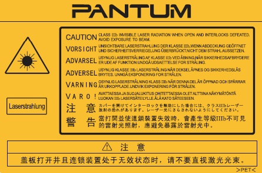

Önsöz
Pantum series ürünlerine hoş geldiniz!
Pantum series ürünlerini kullandığınız için tüm kalbimizle teşekkür ederiz!
Önemli çıkarlarınızı korumak için lütfen aşağıdaki beyanları dikkatle okuyun.
Yasal Bildirim
Ticari marka
Pantum ve Pantum logoları Zhuhai Pantum Electronics Co., Ltd.'in tescilli ticari markalarıdır.
Microsoft®, Windows®, Windows Server® ve Windows Vista® Microsoft Corporation'ın ABD'de
ve diğer ülkelerde/bölgelerde tescilli ticari markasıdır.
Wi-Fi® ve Wi-Fi Protected Setup™, Wi-Fi Alliance'ın tescilli ticari markalarıdır.
Bu Kullanım Kılavuzundaki yazılım adlarının mülkiyeti, ilgili lisans sözleşmesine göre ilgili şirketlerine aittir ve bunlara yalnızca talimatlar için başvurulmuştur.
Bu kılavuzdaki diğer tüm ürün ve marka adları ilgili sahiplerinin tescilli ticari markası, ticari markası ya da hizmet markası olabilir ve bunlara yalnızca talimatlar için başvurulmuştur.
Telif hakkı
Bu Kullanım Kılavuzunun telif hakkı Zhuhai Pantum Technology Co., Ltd.'e aittir.
Zhuhai Pantum Technology Co., Ltd.'in önceden yazılı izni olmadan bu Kullanım Kılavuzunu
herhangi bir yolla ve herhangi bir biçimde kopyalamak, tercüme etmek, değiştirmek ve iletmek
yasaktır.
Sürüm: V1.6
Sorumluluk reddi
Daha iyi bir kullanıcı deneyimi için Zhuhai Pantum Electronics Co., Ltd., bu Kullanım Kılavuzunda değişiklik yapma hakkını saklı tutar. Bu kılavuzda yer alan bilgiler haber verilmeden değiştirilebilir.
Bu Kullanım Kılavuzuna uyulmamasından doğan tüm hasarlardan kullanıcılar sorumludur. Ayrıca, ürün bakım kılavuzu ya da servis taahhüdünde verilen açık garanti dışında, Zhuhai Pantum Electronics Co., Ltd. açık ya da zımni herhangi bir garanti vermez ya da bu Kullanım Kılavuzu için (dizgi veya kelimeler dahil) bir garanti vermez.
Bu ürünü belirli belgeleri veya görüntüleri kopyalamak yazdırmak ya da taramak yahut diğer uygulama biçimleri oluşturmak için kullanmak yerel yasalar tarafından yasaklanmış olabilir. Belirli belgeler ya da görüntüler için bu ürünü kullanmanızın yasal olup olmadığından emin değilseniz, önceden hukuk danışmanınıza başvurmanız gerekir.
Güvenlik Önlemleri
Güç kablosunu çıkarın
Yazıcıyı, güç kaynağını kolay kesebilmek için elektrik prizine yakın ve kolayca ulaşılabilir bir yere yerleştirin!
Lazer Güvenliği
Lazer radyasyonu insan vücudu için zararlıdır. Lazer bileşenleri yazıcı içinde tamamen kapalı durumda olduğu için lazer radyasyonu sızıntısı olmaz. Lazer radyasyonundan kaçınmak için lütfen yazıcıyı rastgele bir şekilde parçalarına ayırmayın!
Yazıcı, CFR standardı uyarınca Sınıf 1 lazer ürünleri hükümlerine uygundur. Yazıcı, lazer bileşenleri arasında lazer radyasyonu sızıntısı olmayan Sınıf III B lazer diyotuna sahiptir.
Yazıcının içindeki lazer bileşenleri üzerine aşağıdaki etiket yapıştırılmıştır.

Güvenlik Uyarısı
Lütfen yazıcıyı kullanmadan önce aşağıdaki güvenlik uyarılarına dikkat edin:
Önlemler
Yazıcıyı Kullanmadan Önce Alınması Gereken Önlemler:
1. Tüm talimatları okuyun ve anlayın;
2. Elektrikli aygıtların çalıştırılmasına ilişkin temel prensipleri öğrenin;
3. Ekipman üzerinde işaretlenen veya ekipmanla birlikte verilen kılavuzda belirtilen tüm uyarılara ve talimatlara uyun;
4. Çalıştırma talimatları güvenlik bilgileri ile çakışıyorsa, çalıştırma talimatlarını yanlış anlamış olabileceğiniz ihtimaline karşı lütfen güvenlik bilgilerine tekrar bakın. Çakışmayı çözemiyorsanız lütfen Müşteri Hizmetleri Hattını arayın ya da yardımı için bir hizmet temsilcisi ile iletişim kurun;
5. Ekipmanı temizlemeden önce güç kablosunu AC güç kaynağı çıkışından çıkarın. Sıvı ya da aeresol temizleyiciler kullanmayın;
6. Ekipmanın düşmesinden kaynaklanan ciddi hasarları önlemek için lütfen ekipmanın düz bir masaüstüne yerleştirildiğinden emin olun;
7. Ekipmanı, radyatör, klima ya da havalandırma borusu yakınına yerleştirmeyin;
8. Güç kablosunun üzerine eşya koymayın. Ekipmanı, insanların güç kablosuna basacağı bir yere koymayın;
9. Çıkışlar ve uzatma kablolarına aşırı yükleme yapılmamalıdır. Bu performansı düşürebilir ve yangına ya da elektrik çarpmasına neden olabilir;
10. Evcil hayvanların AC güç kablosunu ya da bilgisayar arabirim kablosunu ısırmalarına izin vermeyin.
11. Yüksek gerilimli aygıt ile temastan kaçınmak için sivri cisimlerin ekipman yuvasını delmesine izin vermeyin; aksi takdirde yangına ya da elektrik çarpmasına neden olabilir. Ekipman üzerine sıvı dökmemeye dikkat edin;
12. Elektrik çarpması riskinden kaçınmak için ekipmanı parçalarına ayırmayın. Gerekli bakımlar yalnızca profesyonel bakım personeli tarafından yapılmalıdır. Kapağın açılması ya da çıkarılması elektrik çarpmasına ya da diğer olası tehlikelere yol açabilir. Yanlış söküm ve montaj, gelecek kullanımlarda da elektrik çarpmasına yol açabilir;
13. Aşağıdakilerden biri meydana gelirse, ekipmanın bilgisayar bağlantısını kesin ve güç kablosunu AC duvar prizinden çıkarın ve bakım için servis personelinin kalifiye bir üyesi ile iletişim kurun.
• Ekipmanın içine sıvı sızarsa.
• Ekipman yağmur ya da suya maruz kalırsa.
• Ekipman düştü ya da kapağı hasar görürse.
• Ekipman performansında önemli değişiklikler meydana gelirse.
14. Yalnızca talimatlarda belirtilen kontrolü ayarlayın. Diğer kontrollerin yanlış ayarlanması hasara neden olabilir ve onarım için profesyonel bakım personelinin daha fazla vakit harcaması gerekebilir;
15. Elektrik çarpması riskinden kaçınmak için ekipmanı fırtınalı havada kullanmayın. Mümkünse fırtına sırasında AC güç kablosunu çıkarın;
16. Sürekli olarak çoklu sayfa yazdırıyorsanız tepsinin yüzeyi çok ısınabilir. Bu yüzeye dokunmamaya dikkat edin ve çocukları bu yüzeyden uzak tutun;
17. Aygıtın yazıcıya bağlı sinyal kablosu açık alanda bağlanamaz;
18. Lütfen yetersiz havalandırılan bir odada uzun süre kullanmanız ya da çok fazla miktarda belge yazdırmanız durumunda uygun havalandırmanın sağlandığından emin olun;
19. Bekleme durumunda iken, bir süre (örneğin 1 dakika) görev emri almadığında ürün otomatik olarak güç tasarrufu (uyku) moduna geçer; harici bir giriş güç kaynağına bağlanmadıysa sıfır güç tüketimi gerçekleştirir;
20. Sınıf 1 ekipman olduğu için ürünün kullanılırken koruyucu topraklamaya sahip bir güç kaynağı girişine bağlanması gerekir;
21. Bu ürün, teslimat sırasında ürünün kutusunun üzerindeki nakliye işaretlerine göre yerleştirilmelidir;
22. Bu ürün düşük gerilimli ekipman türündedir. Bu ürün belirtilen gerilim aralığının altında kullanırken, yazdırılan içerikten toner dökülüyorsa ya da ekipman yavaş başlıyorsa lütfen ürün önlemlerine bakın ya da Pantum Satış Sonrası Hizmet Merkezini arayın;
23. Bu ürün, bütün makine olarak satılır. Tüketiciler ihtiyaçları olan parçaları satın almak için Pantum Satış Sonrası Hizmet Merkezine gidebilirler. Satılan ürün paket listesiyle tutarlı değilse, sorunu çözmek için lütfen belirtilen Pantum Satış Sonrası Hizmet Merkezine gidin;
24. Bu ürünü, 10°C ile 32,5°C arasında sıcaklığa ve %20 ile %80 arasında bağıl neme sahip bir yere kurun;
25. Belirli bir süre sürekli yazdırmanın ardından yazıcı, güvenlik ve diğer nedenlerden ötürü kesintili yazdırmaya geçebilir.
26. Bu aygıt Kanada lisanstan muaf RSS Endüstri standartlarına uygundur. Çalıştırılması aşağıdaki iki koşula tabidir:
(1) bu aygıt parazite yol açmamalıdır ve
(2) bu aygıt, aygıtın istenmeyen şekilde çalışmasına neden olabilecek parazit de dahil olmak üzere, alınan her türlü paraziti kabul etmelidir.
27. IC Radyasyon Maruziyeti Beyanı:
Bu ekipman, kontrol edilmemiş ortamlar için açıklanan Kanada ve FCC radyasyon maruziyeti sınırlarına uygundur. Bu ekipman radyatör ve vücudunuz arasında en az 20 cm mesafe olacak şekilde kurulmalı ve çalıştırılmalıdır.
Bu alıcı başka bir anten veya alıcıyla yan yana yerleştirilerek ya da birleştirilerek kullanılmamalıdır.
28. Bu ekipman test edilmiş ve FCC Kuralları Bölüm 15 kapsamındaki Sınıf B dijital aygıt sınırlamalarına uygun olduğu görülmüştür. Bu sınırlamalar, ürün konut içinde kurulduğunda zararlı parazite karşı yeterli koruma sağlamak üzere getirilmiştir. Bu ekipman radyo frekansı enerjisi üretir, kullanır ve yayabilir ve talimatlara uygun olarak kurulmadığı veya kullanılmadığı takdirde, radyo iletişiminde zararlı parazite yol açabilir. Ancak, belirli bir kurulumda, parazit oluşmayacağı garanti edilemez.
Bu ekipman, radyo veya televizyon yayınları üzerinde, aygıtın açılıp kapatılmasıyla tespit edilebilen zararlı parazite neden olursa, kullanıcının aşağıdaki önlemlerden birini ya da birkaçını uygulayarak paraziti gidermeye çalışması istenir:
• Alıcı anteninin yönünü ya da yerini değiştirme.
• Ekipman ile alıcı arasındaki mesafeyi arttırma.
• Ekipmanı alıcının bağlı olduğu elektrik devresi üzerinde bulunmayan başka bir prize bağlama.
• Yardım için satıcıya veya deneyimli telsiz/televizyon teknisyenine başvurma.
29. Uyumluluktan sorumlu tarafın açıkça onaylamadığı değişiklikler veya modifikasyonlar kullanıcının ekipmanı çalıştırma yetkisini geçersiz kılabilir.
30. Lütfen Kullanım Kılavuzunu uygun şekilde saklayın.